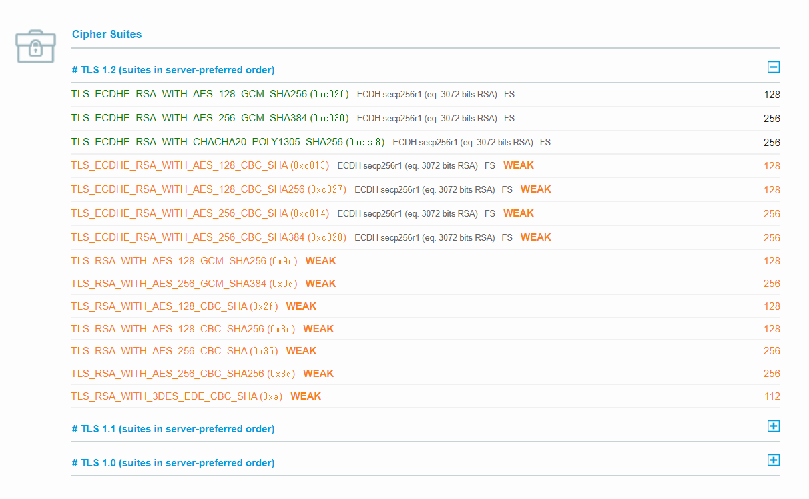

サーバ側と通信するCipher suite (暗号スイート) の調査方法
備忘のためのメモ。今回は例としてS3のs3.amazonaws.comに対して色々と情報を見たいと思います。
暗号スイートとは？
こちらのサイトがわかりやすかったです。
利用可能な暗号スイートの確認
nmap --script ssl-enum-ciphers -p 443 s3.amazonaws.com
[ec2-user@bastin ~]$ nmap --script ssl-enum-ciphers -p 443 s3.amazonaws.com
Starting Nmap 6.40 ( http://nmap.org ) at 2022-04-12 11:51 JST
Nmap scan report for s3.amazonaws.com (52.217.129.136)
Host is up (0.16s latency).
rDNS record for 52.217.129.136: s3-1.amazonaws.com
PORT STATE SERVICE
443/tcp open https
| ssl-enum-ciphers:
| TLSv1.0:
| ciphers:
| TLS_ECDHE_RSA_WITH_AES_128_CBC_SHA - strong
| TLS_ECDHE_RSA_WITH_AES_128_CBC_SHA256 - strong
| TLS_ECDHE_RSA_WITH_AES_128_GCM_SHA256 - strong
| TLS_ECDHE_RSA_WITH_AES_256_CBC_SHA - strong
| TLS_ECDHE_RSA_WITH_AES_256_CBC_SHA384 - strong
| TLS_ECDHE_RSA_WITH_AES_256_GCM_SHA384 - strong
| TLS_RSA_WITH_3DES_EDE_CBC_SHA - strong
| TLS_RSA_WITH_AES_128_CBC_SHA - strong
| TLS_RSA_WITH_AES_128_CBC_SHA256 - strong
| TLS_RSA_WITH_AES_128_GCM_SHA256 - strong
| TLS_RSA_WITH_AES_256_CBC_SHA - strong
| TLS_RSA_WITH_AES_256_CBC_SHA256 - strong
| TLS_RSA_WITH_AES_256_GCM_SHA384 - strong
| compressors:
| NULL
| TLSv1.1:
| ciphers:
| TLS_ECDHE_RSA_WITH_AES_128_CBC_SHA - strong
| TLS_ECDHE_RSA_WITH_AES_128_CBC_SHA256 - strong
| TLS_ECDHE_RSA_WITH_AES_128_GCM_SHA256 - strong
| TLS_ECDHE_RSA_WITH_AES_256_CBC_SHA - strong
| TLS_ECDHE_RSA_WITH_AES_256_CBC_SHA384 - strong
| TLS_ECDHE_RSA_WITH_AES_256_GCM_SHA384 - strong
| TLS_RSA_WITH_3DES_EDE_CBC_SHA - strong
| TLS_RSA_WITH_AES_128_CBC_SHA - strong
| TLS_RSA_WITH_AES_128_CBC_SHA256 - strong
| TLS_RSA_WITH_AES_128_GCM_SHA256 - strong
| TLS_RSA_WITH_AES_256_CBC_SHA - strong
| TLS_RSA_WITH_AES_256_CBC_SHA256 - strong
| TLS_RSA_WITH_AES_256_GCM_SHA384 - strong
| compressors:
| NULL
| TLSv1.2:
| ciphers:
| TLS_ECDHE_RSA_WITH_AES_128_CBC_SHA - strong
| TLS_ECDHE_RSA_WITH_AES_128_CBC_SHA256 - strong
| TLS_ECDHE_RSA_WITH_AES_128_GCM_SHA256 - strong
| TLS_ECDHE_RSA_WITH_AES_256_CBC_SHA - strong
| TLS_ECDHE_RSA_WITH_AES_256_CBC_SHA384 - strong
| TLS_ECDHE_RSA_WITH_AES_256_GCM_SHA384 - strong
| TLS_RSA_WITH_3DES_EDE_CBC_SHA - strong
| TLS_RSA_WITH_AES_128_CBC_SHA - strong
| TLS_RSA_WITH_AES_128_CBC_SHA256 - strong
| TLS_RSA_WITH_AES_128_GCM_SHA256 - strong
| TLS_RSA_WITH_AES_256_CBC_SHA - strong
| TLS_RSA_WITH_AES_256_CBC_SHA256 - strong
| TLS_RSA_WITH_AES_256_GCM_SHA384 - strong
| compressors:
| NULL
|_ least strength: strong
Nmap done: 1 IP address (1 host up) scanned in 7.09 seconds
[ec2-user@bastin ~]$
SSL Server Testで確認
どの暗号スイートを使うのかの優先順位がわかる
https://www.ssllabs.com/ssltest/analyze.html?d=s3.amazonaws.com

S3に対して実際に通信を行う
TLSv1.2のECDHE-RSA-AES128-GCM-SHA256を使って通信をしているようだ。
[ec2-user@bastin ~]$ openssl s_client -connect s3.amazonaws.com:443 < /dev/null
CONNECTED(00000003)
depth=2 C = US, O = Amazon, CN = Amazon Root CA 1
verify return:1
depth=1 C = US, O = Amazon, OU = Server CA 1B, CN = Amazon
verify return:1
depth=0 CN = s3.amazonaws.com
verify return:1
---
Certificate chain
0 s:/CN=s3.amazonaws.com
～省略～
---
No client certificate CA names sent
Peer signing digest: SHA256
Server Temp Key: ECDH, P-256, 256 bits
---
SSL handshake has read 5893 bytes and written 415 bytes
---
New, TLSv1/SSLv3, Cipher is ECDHE-RSA-AES128-GCM-SHA256
Server public key is 2048 bit
Secure Renegotiation IS supported
Compression: NONE
Expansion: NONE
No ALPN negotiated
SSL-Session:
Protocol : TLSv1.2
Cipher : ECDHE-RSA-AES128-GCM-SHA256
Session-ID: 76E616AE11A2D6B01B11496893D0D0B966E0980757F14B7397D9A1C0FB3C1512
Session-ID-ctx:
Master-Key: 588AB3813C66F79A3874BF67F4D11EC3F12B3FBC25C317C384EC111119B9E854D570DCE2DCEA7832D25E70E4AD1AF99F
Key-Arg : None
Krb5 Principal: None
PSK identity: None
PSK identity hint: None
Start Time: 1649731926
Timeout : 300 (sec)
Verify return code: 0 (ok)
---
DONE
暗号スイート名 と OpenSSL での名称の対応表
opensslと一般的な暗号スイート名は一致していないので対応表を見つつ、これはどれだ？というのを見つける必要がある
https://www.ipa.go.jp/security/ipg/documents/tls_cipher_suite_config_20200707.pdf
TLS 暗号設定 暗号スイートの設定例
1.1.3. 一般的な名称と OpenSSL での名称の対応表
関連しているかもしれない記事
- S3のパブリックアクセスに関するブロックパブリックアクセスとバケットポリシーの関係
- Amplifyを使用してCognitoテスト環境を構成する
- AWS Config設定時の「設定を記録できる配信チャネルがありません。」を解消する
- EMR Sparkのメモリ関連のパラメータ設定
- RedshiftのPython UDFの同時実行数